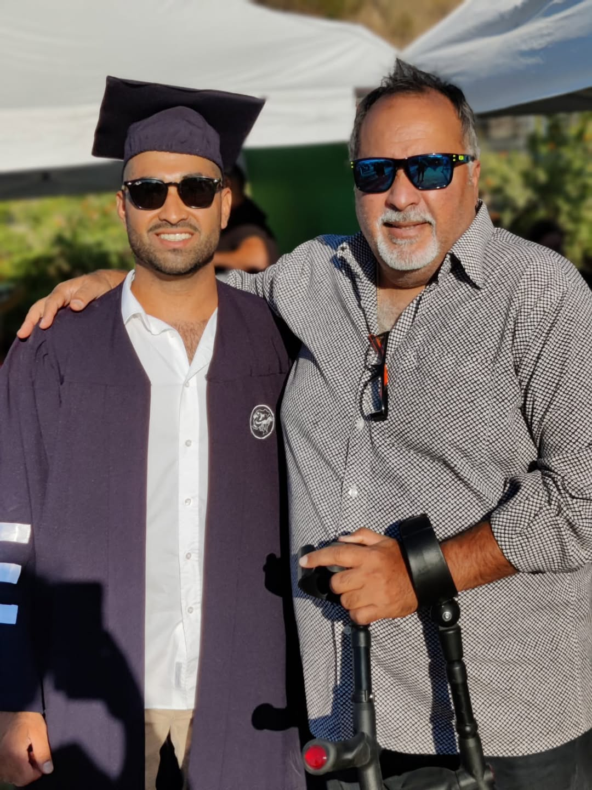

לזכרו של אבא שלי
למה בחרתי להיות פיזיותרפיסט

כשהגעתי למפגש הפתיחה של התואר באוניברסיטת אריאל, נשאלנו ״למה בחרנו ללמוד פיזיותרפיה?״. חלק סיפרו על פציעות שעברו ותהליך שיקום משמעותי, אחרים על הרצון לעבוד עם אנשים, והיו גם כאלה שחשבו שזה מקצוע ממש מגניב (והם לא טועים).
הסיבה שבחרתי להיות פיזיותרפיסט הגיעה מהבית שלי. מהילדות.
אבא. לוחם.
אבא שלי, זכרונו לברכה, היה לוחם בפלחה״ן גולני. במהלך קורס צניחה הוא נפצע בתאונת צניחה, ומאז היה נכה צה״ל. הנכות נראתה לעין — צליעה, קושי בתפקוד, ובהמשך גם קטיעה ושימוש בפרוטזה. אבל הייתה פציעה נוספת — הפציעה הנפשית. אז זה היה טאבו.
הפוסט טראומה קיבלה את מקומה במשפחה. זה התבטא בעוררות יתר, עצבנות, התפרצויות כעס, בהלה וצעקות. כילד, זה היה נורמטיבי בשבילי — כי זה מה שהכרתי. רק עם השנים הבנתי שלא כך צריך להיות, ושזה דורש טיפול מקצועי.
הרגע שבו הכול התבהר
הרגע שבו הבנתי שפיזיותרפיה היא ריפוי אמיתי היה כשראיתי את אבא שלי מחייך במהלך טיפול, לצד העבודה הקשה. שם הבנתי שפיזיותרפיה יכולה לתת מזור לכאב הפיזי והנפשי, והבנתי מהו הדבר שנועדתי לעשות.
השאיפה שלי היא לטפל בנכי צה״ל — לא רק בשבילם, אלא גם בשביל המשפחות שלהם. כדי שבת/בן הזוג, הילדים וההורים לא יחוו את מה שאני חוויתי. זו הסיבה שבחרתי להיות פיזיותרפיסט.
מהמלחמה — לשליחות
כשחזרתי מהמלחמה לעבודה כפיזיותרפיסט בבית החולים בילינסון, חיברתי בין העולמות שלי — פיזיותרפיה ואיגרוף תאילנדי — והבאתי את השילוב שלי ללוחמים הפצועים כדי ליצור צורת שיקום אחרת.
כשג׳ שיתף אותי בקשיים שלו ובכמה זה עושה לו טוב — סיפרתי לו על אבא שלי. ושם הכול התחבר.
הבנתי ש־TheraFist זה לא רק כלי טיפול.
זו השליחות שלי.
אני רוצה לעזור ללוחמים שנפצעו, פיזית או נפשית, ולהראות להם שהפציעה היא לא סוף הדרך — היא רק התחלה של קרב חדש, שבסופו הם יצאו חזקים יותר.
אני כאן בשבילכם, למענכם ואיתכם.
אביחי דוקרקראם אתם, או מישהו שיקר לכם, מתמודדים עם פציעה — פיזית או נפשית — אשמח ללוות אתכם בקרב הזה.